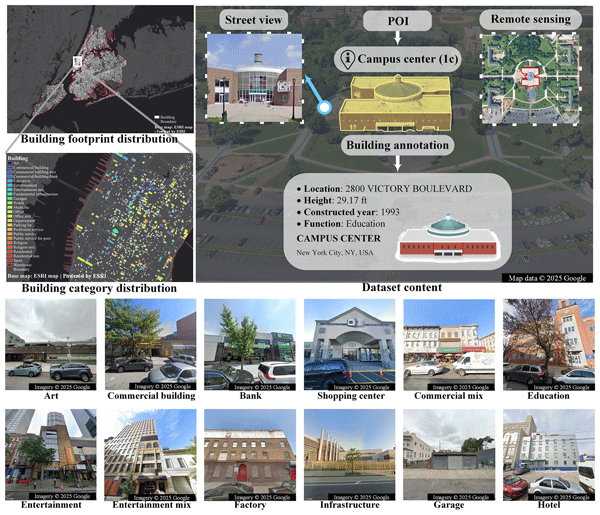
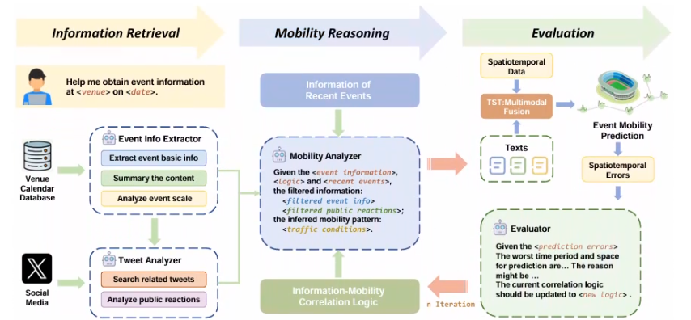
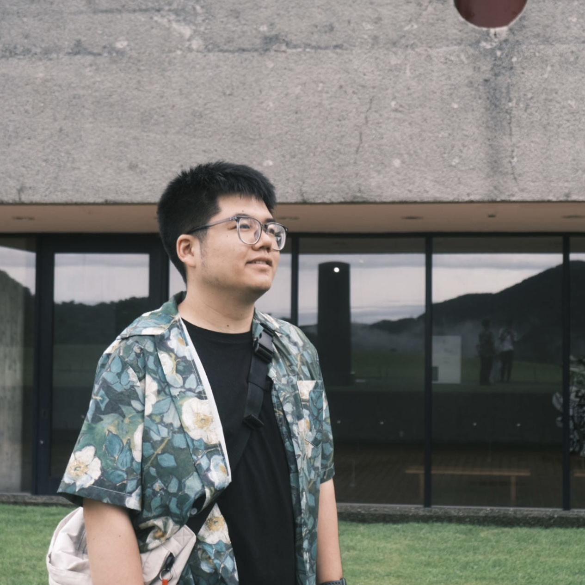

How can spatial big data as a tool help us better understand urban dynamics and social events?
I am Professor at the Tongji University in Shanghai, China, and Adjunct Professor at Ryerson University, Toronto, Canada. My research interests lie at the intersection of GIScience, geography, computer science and computational social science, focusing on using GIS, geospatial big data and new sensing technologies to progress the understanding of the mechanism of the interaction between human activities, urban transportation and social events. I am the Chair of ISPRS WG IV/7 - Human Behaviour, Mobility and Socio-Spatial Dynamics. I serve as Associate Editor for ISPRS IJGI.
From 2016 to 2018, I was Planner at the Ministry of Transportation Ontario, Canada. I did my postdoc training in the GIScience Research Group, Institute of Geography at Heidelberg University, Germany between 2016 and 2018. Prior to Heidelberg, I received my PhD degree in Civil Engineering (Geomatics stream) from Ryerson University, Toronto, Canada in 2016. I received my master’s degree in Geographical Information Science (GIS) from Peking University and Central South University in 2011 and my bachelor’s degree in Computer Science and Technology from Beijing University of Chemical and Technology in 2008.
NEWS
- Recruitment — Prospective PhD and Master students, as well as undergraduate interns, interested in embodied intelligence, urban spatial intelligence, urban human activity pattern mining, and human–machine–environment interaction are all welcome to apply.
- Openings for 2027-intake PhD students: 2 positions. Research directions:
- 1. Multimodal AI models for understanding urban pedestrian space
- 2. Interaction between urban environments and everyday human travel behavior
- 2025.11: 2nd International Workshop on Geo-spatial Computing for Understanding Human Behaviors will be held at Tongji University, Shanghai, China.
- 2023.10: We are orgnizing a SI: Imagery analytics for understanding human-urban infrastructure interactions on the ISPRS Journal of Photogrammetry and Remote Sensing.
- 2023.9: Pengxiang Su Won the 2023 ISPRS Geospatial Week Best Presentation Award.
- 2023.9: Chenghu He and Shijun Lu joined the group as PhD students, and Haoran Fang, Yifan Xu and Zehan Lin joined the group as Master students. Welcome!
- 2022.9: Pengxiang and Weihua joined the group as PhD students, and Huanying and Zhaoyang joined the group as Master students. Welcome!
- 2022.6: Pengxiang Su and Huangying Chen successfully defended their Bachelor thesis. Congratulations! Pengxiang and Huanying will join the team as a PhD student and a Master student in Fall, respectively!
- 2021.8: Dr. Huang received an NSFC Grant.
- 2021.7: Dr. Huang started service as Associate Editor for ISPRS IJGI, handeling manuscripts on Citizen Science, Crowd Sourcing and Volunteered Geographic Information.
PROJECTS

A multimodal building function classification dataset
34,000+ building footprints in New York City paired with rooftop and street-view imagery, building description texts and 71,000+ POIs, annotated over 26 fine-grained function categories. Published in Earth System Science Data (2026).

Semantic synthesis for dynamic urban mobility prediction
A semantic-aware framework that couples urban language cues with mobility data to predict dynamic urban human mobility. Published at EMNLP 2025.
PEOPLE
Postdoctoral researcher
PhD students


Master students
Undergraduate
Alumni
- Yanjie Zhang (MS 2024), PhD@National University of Singapore
- Huanyin Chen (MS 2024), PhD@Wuhan University
- Zhaoyang Chen (MS 2024), Chinalco Shuwei (Chengdu) Technology Co., LTD
- Yifan Xu (MS 2026), Alibaba Group
- Haoran Fang (MS 2026) Genscript Biotech
- Weihua Huan (PhD 2026)
SELECTED HONOURS
- The U. V. Helava Award (Best Paper Award), International Society of Photogrammetry and Remote Sensing, 2016.
- 1st Place PhD Best Paper Award, International Conference on Location-based Social Media Data. Athens, Georgia, USA. Mar. 13-14, 2015.
PUBLICATIONS
- Decoding the city's rhythm: a framework for probabilistic separation of work days and rest days human mobility patterns. GIScience & Remote Sensing 63 (1), 2665918
- Exploring the complexity of urban walking environments based on pedestrian navigation data. Computational Urban Science 6 (1), 27
- Spatiotemporal dynamics of violence in social unrest events based on geo-social media data. Environment and Planning B: Urban Analytics and City Science 53 (2), 303-318 , 2026
- Towards generative location awareness for disaster response: A probabilistic cross-view geolocalization approach. ISPRS Journal of Photogrammetry and Remote Sensing 237, 130-145
- BuildingSense: a new multimodal building function classification dataset. Earth System Science Data Discussions 2026, 1-37 , 2026
- A WebGIS-based digital twin platform for intelligent operation and maintenance of rail transit infrastructure. Expert Systems With Applications 296, 129180 , 2026
- Wheelchair accessibility to public facilities via transits and analysis of delay factors—A case study of Shanghai, China. Computers, Environment and Urban Systems 121, 102331 , 2025
- SeMob: Semantic Synthesis for Dynamic Urban Mobility Prediction. Proceedings of the 2025 Conference on Empirical Methods in Natural Language … , 2025
- Images and deep learning in human and urban infrastructure interactions pertinent to sustainable urban studies: Review and perspective. International Journal of Applied Earth Observation and Geoinformation 136 … , 2025
- Correlation and causality between traffic congestion and the built environment: a case study in New York city. International Journal of Digital Earth, 18(2)
- A spatiotemporal adaptive local search method for tracking congestion propagation in dynamic networks. GIScience & Remote Sensing 62 (1), 2602215 , 2025
- An approach for high definition (HD) maps information interaction for autonomous driving (in Chinese). Geomatics and Information Science of Wuhan University
- Understanding spatiotemporal motivations of urban micro-mobility from the lens of dockless e-scooter sharing. Computers, Environment and Urban Systems, 96, 101848
- Revealing dynamic spatial structures of urban mobility networks and the underlying evolutionary patterns. ISPRS International Journal of Geo-Information 11 (4), 237 , 2022
- A flexible framework for measuring accessibility with destination bundling. Journal of Transport Geography 91, 102949 , 2021
Please refer to my GoogleScholar for complete pulbications.
TEACHING
At Tongji, China
- Fall 2022: Internet GIS (undergrad), Geospatial Big Data (undergrad)
At Ryerson, Canada
- Fall 2019, 2020: CVL736-Geospatial Information Systems (undergrad)
- Winter 2020: CV8501-Advanced Geospatial Information Systems (grad)
At Heidelberg, Germany
- Fall 2017: Geospatial Analysis of Geosocial Media Data (undergrad & grad)